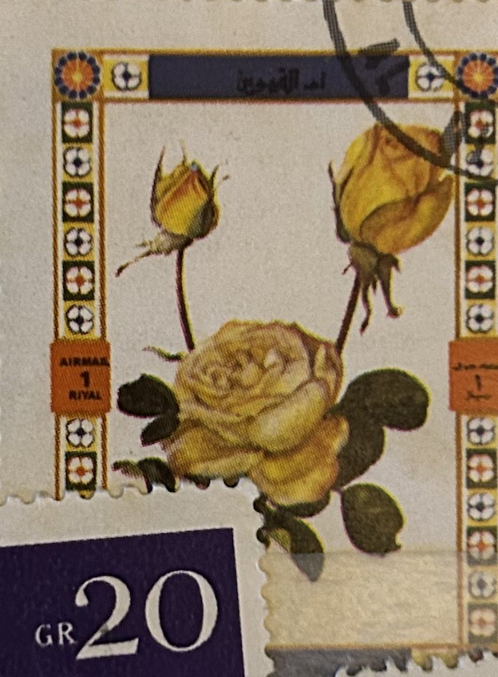
| SOURCE | TITLE| IMAGE MATCH | click to source page |
| Alamy | Thorn letter hi-res stock photography and images - Alamy | 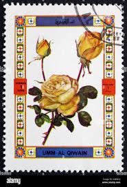 |
| Todocolección | umm al qiwain 1972 - hb rosas .- - Buy Stamps about flora on todocoleccion | 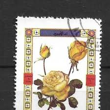 |
| Alamy | Umm al quwain nature hi-res stock photography and images - Alamy | 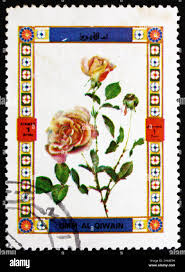 |
| Alamy | UMM AL-QUWAIN - CIRCA 1972: a stamp printed in the Umm al-Quwain shows Rose variety, Flower, circa 1972 Stock Photo - Alamy | 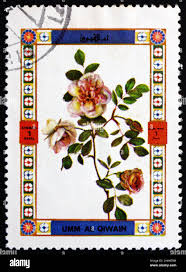 |
| Alamy | Umm letter hi-res stock photography and images - Alamy |  |
| Alamy | Al letter hi-res stock photography and images - Alamy |  |
| eBay | SOMALIA Mi 656 - Garden Roses "Yellow Blossom" (pb58207) | eBay | 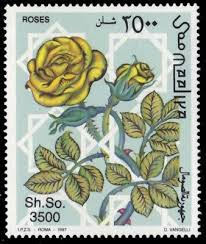 |
| Alamy | Umm al quwain old hi-res stock photography and images - Page 3 - Alamy | 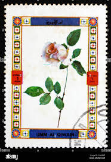 |
| Pngtree | Rose Postcard Photos, Download HD Pictures - Pngtree |  |
| Present from Syria between 1980-90 | 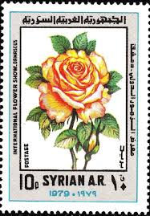 | |
| HipStamp | Australia -#826 -1982 -Roses "Marjorie Atherton"-27c used | Australia & Oceania - Australia, General Issue Stamp / HipStamp | 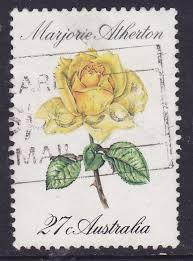 |
| eBay | Yellow 32 Cent Denomination United States Stamps for sale | eBay | 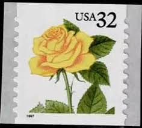 |
| 123RF | GERMANY - CIRCA 1982: A Stamp Printed In The Germany, Berlin Shows Tea Rose Hybrid, Flower, Circa 1982 Stock Photo, Picture and Royalty Free Image. Image 12848027. | 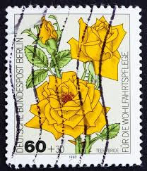 |
| eBay | Flowers Qatari Stamps for sale | eBay | 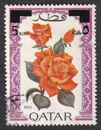 |
| eBay | Used Individual Algerian Stamps for sale | eBay | 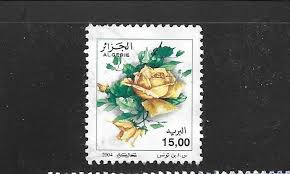 |
| Find Your Stamps Value | Value of queen elizabeth green 33p stamps | 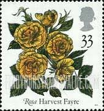 |
| PicClick | DHUFAR (STATE OF Oman) sheet of 8 Flower Stamps CTO Trucial State bogus $2.99 - PicClick |  |
| British Stamps for 1976 | 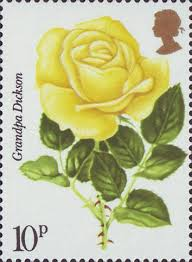 | |
| vividagallery.com | Ajman Orange Yellow Rose Flower Botanical Garden Flora Postage Stamp Onesie by Vivida Gallery - Vivida Gallery | 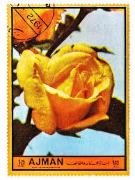 |
| History of hybrid tea roses | 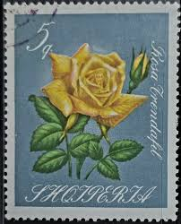 | |
| ebid.net | France 1971 Durat & Vanier 5,00f Used Stamp. on eBid United States | 217149148 | 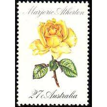 |
| Shutterstock | Plant Art Stamp: Over 6,039 Royalty-Free Licensable Stock Photos | Shutterstock | 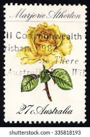 |
| Alamy | Stamp australia rose flower hi-res stock photography and images - Alamy | 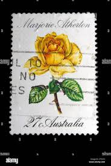 |
| Mystic Stamp Company | 3054 - 1997 32c Flora & Fauna Series: Yellow Rose, coil - Mystic Stamp Company | 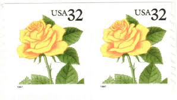 |
| Shutterstock | Germany Circa 1982 Cancelled Postage Stamp Stock Photo 2713746977 | Shutterstock | 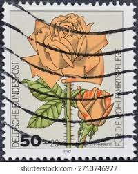 |
| Hello. So, I sorted them by country although there are some that I am confused. First I present Syria because there are many unused. Would appreciate some infos and if any has |  | |
| european-center.org.ua | 1950s Celebrate The Century Stamp Sheet - Fifteen 33 Cent Vintage Stamps Scott #3187 Diamond Wedding Band | 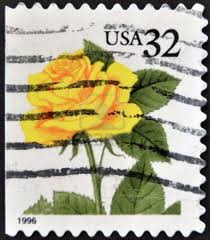 |
| eBay | 32 Cent Denomination US Back of Book Stamps for sale | eBay | 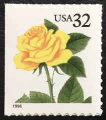 |
| 410 Timbres idées alger à enregistrer aujourd'hui | philatélie, timbre et bien plus encore | 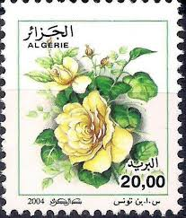 | |
| eBay | BERLIN GERMANY SC# 9NB194 1982 FLOWERS ROSES OLD VF USED SEMI-POSTAL STAMP | eBay | 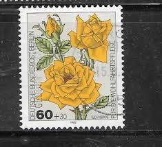 |
| Freestampcatalogue.com | Stamps from Umm al-Quwain - Freestampcatalogue.com - The free online stampcatalogue with over 500.000 stamps listed. |  |
| HipStamp | Used PNC1 32c Yellow Rose SA Choose 8888 US 3054 | United States, General Issue Stamp / HipStamp | 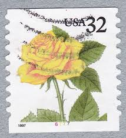 |
| Plate Number Coil Collectors Club | 32c Yellow Rose Vending Book of 30 | 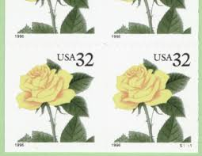 |
| Stamp News Online | Flower Stamps for the month of May | 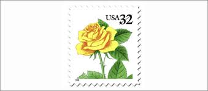 |
| eBay | 1982 AUSTRALIA ## 826-829, ROSES, MNH | eBay | 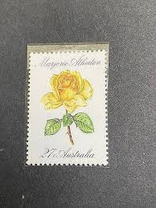 |
| Etsy | 1997 USPS Us Bk241 Booklet of 15 32 Cent Stamps Flora and Fauna Series Yellow Rose Brown - Etsy | 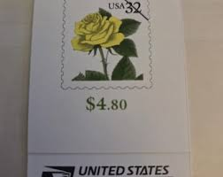 |
| eBay | Germany B 1982 Roses Flowers Plants Nature Welfare Fund 4v set MNH | eBay | 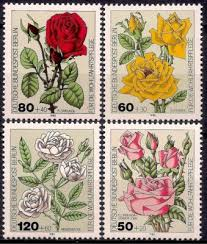 |
| Shutterstock | Albania Circa 1967 Post Stamp Printed Stock Photo 150703019 | Shutterstock | 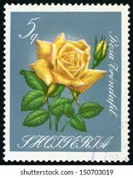 |
| eBay | WHOLESALE: 25x Umm al Qiwain 1972 **/MNH Mi.675/80 A Flowers Blumen Rosen Roses | eBay | 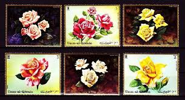 |
| USCA (NL) | MODERN USA VARIANTEN | 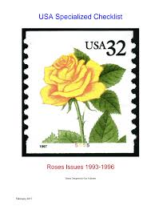 |
| eBay | ALBANIA 1027 - Garden Roses (pf83995) | eBay | 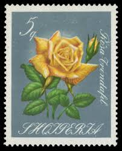 |
| Etsy | Yellow Rose Stamp - Etsy Australia | 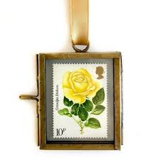 |
| eBay | Stamp RSA003 1979 South Africa – World Rose Convention, m/s set of 4 MNH | eBay |  |
| Shutterstock | 1+ Thousand West Germany Postage Stamps Royalty-Free Images, Stock Photos & Pictures | Shutterstock | 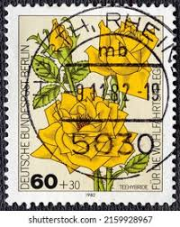 |
| Shutterstock | Iran Lettering: Over 1,611 Royalty-Free Licensable Stock Photos | Shutterstock | 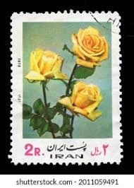 |
| HipStamp | New Zealand stamp, Scott# 588, used, single stamp, #588 | Australia & Oceania - New Zealand, General Issue Stamp / HipStamp | 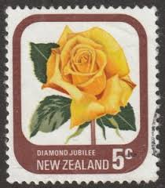 |
| Etsy | 20 Vintage Unused Yellow Rose Mail Stamps / Love Botanical Roses Flower USPS Postage / 32 Cents US - Etsy | 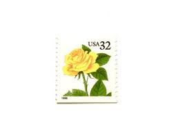 |
| eBay | Great Britain - 1976 The 100th Anniversary of the Royal National Rose Society | eBay | 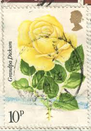 |
| Dreamstime.com | Yellow rose in stamp editorial photo. Image of communication - 180544216 | 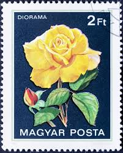 |
| Mystic Stamp | 2829-33 - 1994 29c Summer Garden Flowers - Mystic Stamp Company | 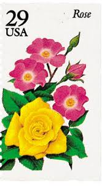 |
| eBay | Umm Al Quwain,Qiwain 1972 Roses,Flowers,Fleur,Blume,Fleur,Mi.675-1 B,Pairs,MNH | eBay | 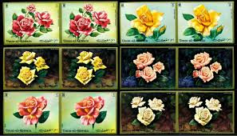 |
| iHobb | Vending Booklets - Unexploded - iHobb | 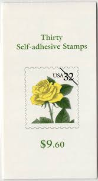 |
| eBay | Somalia 1997 Roses Flowers Nature Horticulture 4v set MNH | eBay | 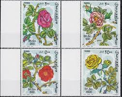 |
| Tunisia Stamps | Stamp N°1617 | 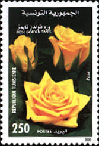 |
| HipStamp | 3054 Used Yellow Rose | United States, General Issue Stamp / HipStamp | 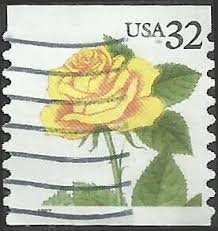 |
| eBay | New Zealand flower stamps on cachet cover FDC. x21748 | eBay | 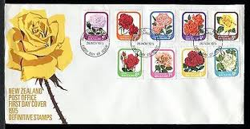 |
| Mystic Stamp Company | 3054a - 1997 32c Flora & Fauna Series: Yellow Rose, Imperf. Error - Mystic Stamp Company | |
| Flourish Fine Writing | 10 Yellow Rose Postage Stamps // UNUSED // 32 Cent // Botanical // Flo – Flourish Fine Writing | |
| Etsy | Roses Vintage Ephemera Pack 22 Pieces - Etsy |